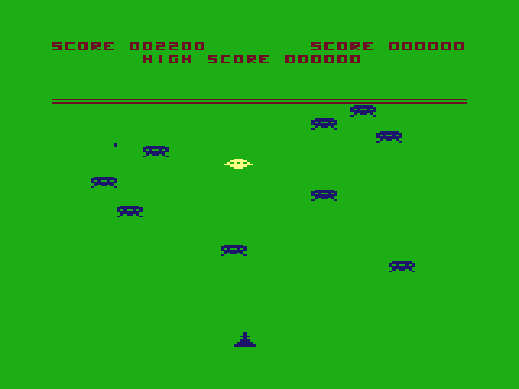
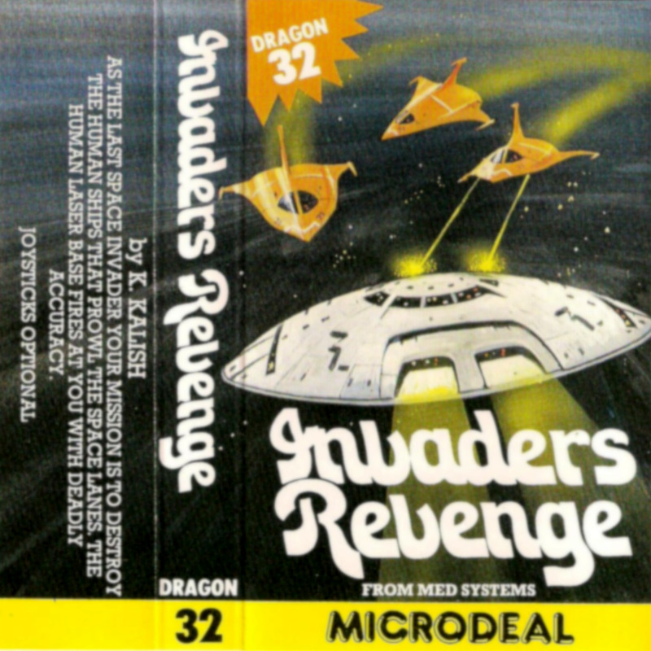
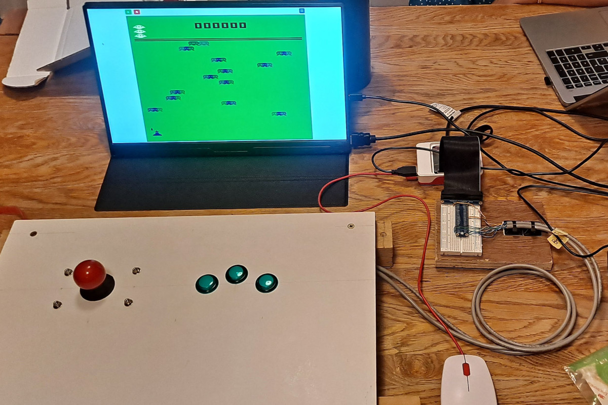

September 2025
In my increasingly-distant youth, my family had a Dragon 32 home computer, which I spent many hours with. For a lot of this time, I was writing programs of various kinds, with the built-in Basic and then also assembly language. But, unsurprisingly, I also played games, including one called Invader’s Revenge, written by Kenneth Kalish. You control a yellow ship, and have to shoot enemy “defender” ships while not crashing into anything or being shot by the enemy base. Good fun.


Screenshot and cassette inlay for Invader’s Revenge.
Cassette inlay image from The Dragon Archive.
In my current job, I am developing and researching Pytch, a free online educational coding platform which helps people learn Python by writing “Scratch-like” programs. I thought a port of Invader’s Revenge could be a good example of what can be made in Pytch.
I could probably have achieved this by taking screenshots and working out the game logic just by observations, but thought it would be a more interesting exercise to reverse engineer the original machine code. This would also allow a dose of nostalgia for the Dragon and working in assembly language, albeit someone else’s.
This is the result. You can play it below, or “see inside” by opening the project within the Pytch IDE.
Use arrow keys to move and space to fire!
The starting point was a 7525-byte raw binary dump of the game from its cassette audio. (I do own this cassette, but got the image from the web to save time.) Using a combination of existing tools and various bits of ad-hoc Python code, I produced what I hope is a reasonably readable disassembly of the game’s code and data.
E4 84 10 26 03 5C E6 84 C4 AA E7 80
↧
; Turn next mask byte into red/blue ; detect mask LDB ,U+ ASLB ; If the player overlaps with something ; red or blue... ANDB ,X ; ...they have hit a defender or defender ; shot; chain to handler LBNE Sub_HandlePlayerCrash ; Mask out yellow from destination byte LDB ,X ANDB #$AA STB ,X+
Code and data are shown with different background colours. Subroutines are cross-linked, to make them clickable at call sites. Chunks of data which represent graphics are rendered.
Various features of the code struck me as interesting:
RTS opcode by pulling the program counter in the same
instruction as restoring a saved register.10 and 11 respectively, allowing a simple
bitwise-and test for defender-coloured pixels.DAA (for
Decimal Adjust after Addition) for arithmetic with BCD values.
The logic for awarding an extra life each 10,000 points falls out in a
pleasingly simple way from this representation.if/else is laid out
differently in different places. Sometimes one of the blocks is
“inline”, and other times both the if and the
else arms are separate and jumped to and from.8F is used, which is not a valid 6809 opcode. It is reported
as having a deterministic effect (store X immediate), but I did
not get to the bottom of the effect on the game logic.JMP to the reset routine
even though conceptually it is a subroutine. This was suspected by code
inspection and verified under GDB. Compare the care taken in a similar
situation in the end-of-game code.10 then, in each iteration,
decrements this counter and then tests it for being non-zero. I wasn’t
able to verify this behaviour in play though.I had heard of, and wanted to try, the special-purpose reverse-engineering disassembler IDA, but the free version does not support the 6809 processor. Only too late did I discover the free-software Cutter, based on Rizin, which does support the 6809. This might be worth exploring if I do something like this again.
The tool I ended up using was f9dasm. As well as the
binary machine-code dump, you supply a separate file of annotations and
other directives. The f9dasm tool then disassembles the
machine code according to your directives and annotations. I added a
post-processing step, implemented as a collection of ad-hoc Python
scripts, to break the disassembly into “chunks” for more readable
rendering in HTML. A “chunk” is a subroutine or a piece of data.
The whole process was highly iterative. The starting point was to trace execution from the entry-point address, and then go round and round with a mixture of the following activities.
Understanding a variable or data structure was the most important and helpful task. It was not always immediately obvious (to me) what role a particular variable had, so making a conjecture and then refining it was quite common.
Looking for sections of code which write to video memory was a helpful technique, because by noting where the data was read from, I could tell whether that section drew the player ship, a defender ship, etc.
Almost all of the work was done just by looking at the code, although for a handful of tricky parts I used the XRoar emulator, and its ability to act as a debug target for a custom build of the GNU Debugger. In particular, I decided that working out the exact waveform of a sound effect from the code was too much work; see below.
The Dragon and Pytch screen dimensions differ. The Dragon, in the graphics mode used, has a 128×192 pixel grid, with each pixel twice as wide as it is high. The Pytch “stage” is 480×360.
In broad terms, the game layout has an upper score/display area, and a lower play area, separated by a pair of thin red bars. The Dragon also has a fairly broad border round the active display area. I drew a static background image which I hope is a reasonable replication of the overall effect.
The defenders patrol in horizontal “lanes”. I tried to get a close match to the spacing of these lanes, including a gap such that the player cannot be hit at a particular vertical position. This is coupled with the graphics design in terms of the dimensions of the sprites; see below.
The horizontal “stepping” motion of the defenders and their base is part of the aesthetics of the design, so I kept that. In the Dragon original, the player ship has finer-grained movement; in the port I allow it to move with single-pixel resolution.
To keep things on an integer grid, the sprites had to be different sizes to the originals. I redrew them by hand with reference to the originals, trying to keep the look and feel of images, but I did have to make some changes. In some cases I used the higher resolution available. For some explosion graphics, the original was not symmetrical; here I drew symmetrical versions, although I’m not sure whether this was the right thing to do.
Example of a higher-resolution sprite:


Dragon 32 and Pytch graphics for the player’s ship.
From inspection of the code, it was possible to tell that each sound effect consists of a sequence of “chirps” — short fragments of rising or falling pitch. However, replicating the sound effects based on the code would have required an exact understanding of the timing of the instructions used, so I took a different approach.
Running the game under the XRoar emulator, I captured the sound effects. Analysing the sounds in Jupyter Lab, and using regression to estimate the starting pitch and rate of change of pitch for each chirp, allowed them to be re-synthesised. On the Dragon, the output waveform is essentially a square wave. In the re-synthesis, I used something slightly more rounded. This gives a softer sound, which I think I’m happy with.
Example of captured vs re-synthesised sound effect:
Sound effect when destroying the defender base, original and re-synthesised.
With the understanding of the game logic gained from the reverse engineering, I was able to write event-driven Python code in Pytch to give (something very close to) the same behaviour. In some cases, such as stepping through the phases of a defender explosion, the concurrency provided by Pytch made the code much simpler.
The Pytch port is not a perfect re-creation. The main differences in the Pytch version are:
We have an experimental version of Pytch which can interface with hardware via the GPIO pins on a Raspberry Pi. In this version, you can play Invader’s Revenge with an arcade-style joystick and fire button.

Hardware-enhanced Pytch version of Invader’s Revenge running on a Raspberry Pi 5.
I ended up getting drawn into this project rather more than I originally planned, but the result was a full understanding of almost all of the code of the game. Porting the code to Pytch was an interesting exercise, and the resulting game is fun to play.